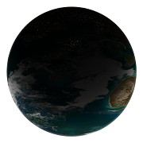
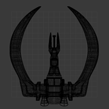

This plugin introduces two new factions, the Valuutians and the Lost Ones. The Valuutians are an alien species inhabiting a small sector of space northeast of Unfettered Hai territory. An ancient people wary of contact with outsiders, this species has only recently begun colonizing other planets in their sector.

The Lost Ones are a human faction, descendants of a crew of privately funded scientists and engineers who ended up in Valuutian space. After the Valuutians welcomed these strange new creatures into their society, many humans grew dissatisfied with their lack of standing in the Valuut government and staged a series of peaceful protests to gain independence. Massive public pressure from the younger generation of Valuutians, who quickly became enamored with human culture, resulted in the Valuut government granting the newly formed Lost Ones nation-state status.
Content

This plugin is a work in progress. It currently contains:
- Ten new systems
- Sixy-nine new planet and moon sprites
- Twenty new ships, thirteen of which are immediately purchaseable
- Thirty-two new outfits with custom effects
- Custom sound effects and ambient music
Bugs/Compatibility issues can be reported using Github's issue tracker. Feature requests are also encouraged.
New releases often include features from the latest version of Endless Sky. They will be noted in the changelog as "requires ES x.x or higher". To access these features as they come out, you can opt-in to the "beta" branch on Steam or build the latest version of Endless Sky from source.
View Changelog